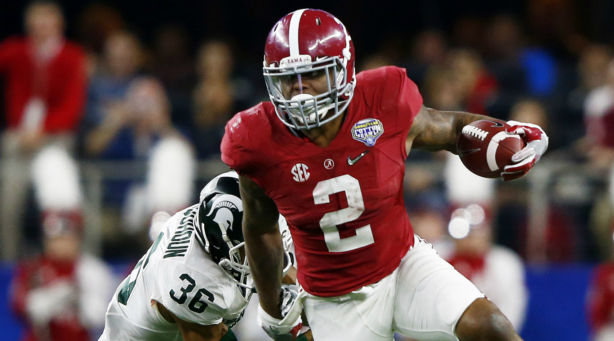

Mark Ingram won the 2009 heisman trophy at alabama. He rushed for a bunch of yards and a bunch of touchdowns. He often ran out of the wildcat formation. He led Alabama to a 14-0 record and a win in the national championship game against Texas. More about Mark
Derrick Henry won the 2015 heisman trophy at Alabama. He rushed for a bunch of yards and a bunch of touchdowns. Unlike previous seasons for alabama running backs he did not have a backup take 30-40 percent of the carrys. He rushed for 40+ rushes several times in the regular season and seemed to get better as the game went on. He led Alabama to a 14-1 record and a win in the national championship game against Clemson. More about Derick